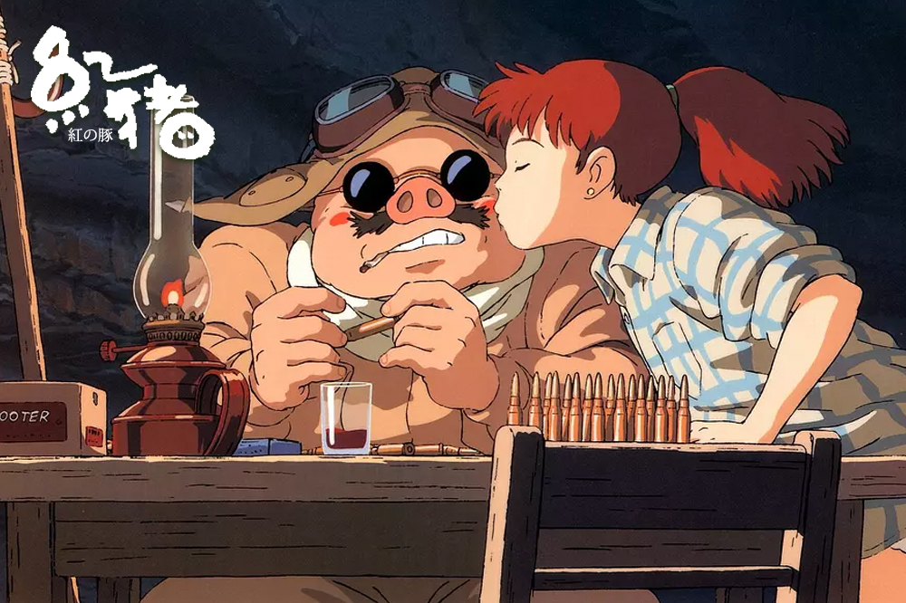

当宫崎骏说起宫崎骏

全世界的动漫家对宫崎骏都充满了无上的敬意。宫崎骏在本文里谈到了自己的一系列动画。
目前，拉赛特负责宫崎骏所有电影的英文配音工作，吸引了像比利·鲍伯·松顿（Billy Bob Thornton）、克里斯蒂安·贝尔（Christian Bale）、劳伦·白考尔（Lauren Bacall）和连姆·尼森（Liam Neeson）这样的名人为电影“献声”。从这些可以看出，拉赛特的话并不是吹捧。
宫崎骏是一位幻想大师，他能够轻轻松松地创作出一场蒸汽朋克式的动作冒险，也可以创作出亲近儿童的戏剧，战争期间空中嬉戏的场景，后世界末日的荒废场景，怪物聚居的幽灵世界，或者是他的故乡——日本——那暴乱的久远过去。铃木敏夫是宫崎骏的御用制片人，也是吉卜力工作室的董事会成员，他描述宫崎骏时只用了一个词——“天才”。
《帝国》杂志见到了这位68岁的导演，进行了一次不寻常的采访，我们感觉他的确是一个与众不同的天才。
吉卜力工作室坐落在东京西部城市——小金井安静的郊区，由三座不起眼的大楼组成。我们到达宫崎骏的私人办公楼——沿着工作室的大楼往下走几条街就是。宫崎骏就在自己的办公室里，办公室里空间很大但很舒适，里面摆放着一架钢琴，还设有一个烧柴的火炉，十分显眼。在近两个小时的采访中，宫崎骏不断地往炉子里添加柴火。
1979《鲁邦三世：卡里奥斯特罗之城》
宫崎骏谈：实际上，当时我并不太了解欧洲的风景地貌和建筑。所以我给自己设了条规则——试着重现同样的场景。如果人物在某个场景出现了一次，那么他就要再次来到这个场景。就像游戏一样，背景就这么被创造出来。“这里有两个湖，一个城堡，那里有一个罗马水道桥……”然后我想，“就是这样，现在我能在这个背景之上做电影了！”我只是希望我能把它做得更好！
1984《风之谷》
宫崎骏谈：我画这部漫画的时候还没有涉足动画制作，那时候我有太多自己的时间，所以我试着画一部不会被制作成动画的漫画。后来我不得不把它做成动画电影，麻烦就来了！当时太多东西我都不懂，不知道该怎样制作。但我仍然要做。为什么主角非得是女性？因为男性不可能有那种能力！女性能够在真实世界和另一个世界中穿行，就像某种媒介一样。在老版的灰姑娘的故事中，她可以通过壁炉在两个世界之间自由穿行，她就是有这样的能力！娜乌西卡（Nausica）擅长的不是击剑，而是对人类世界和昆虫世界的理解。动物靠近她不会感觉到危险，她能够抹去自己的存在感。而男性太有侵略性了，而且只能在人类的领域里，太肤浅了！（笑）所以这个角色必须设定为女性。
1986《天空之城：拉普达》

宫崎骏谈：我想做一个冒险故事，故事主角是个好斗又有许多梦想的男孩。我能够确定人们不会来看那种电影。后来许多人开始说“我爱拉普达”，但是影院上映时这部电影并没有吸引很多观众。男性只有拥有一份工作、一份事业后才能被看作是一个成年人。对女性来说，存在于这个世上就有自己的定位，而男性则需要社会职业或者某种地位，再或者是某种命运、一些无形的东西来确定自己的位置。所以电影以巴鲁（Pazu）这样一个工人的孩子做主角，很难吸引观众到电影院观看。我希望再做一部以八九岁男孩为主角的电影。在这个世界上，男孩的命运有时很悲惨。对男孩们来说，在这个地方生存十分艰难。
1988《龙猫》

宫崎骏谈：你知道的，我不可能做那种电影，那种恶有恶报、皆大欢喜的电影。我不会做那种电影。我认为孩子长到三四岁的时候，他们只需要看《龙猫》。这是一部相当天真的电影。我想要做这样一部电影——怪物住在你隔壁，但是你却看不见它。就像你走进一个森林，你感觉到什么，你不知道是什么，但是那个东西确实存在。你知道吗？这种情况发生过很多次。最近我在一座古旧的大房子里住了两个月，这座房子在海边的崖壁上。我住在其中的一个房间里，但是我觉得其他的房间里也有人住。出门散步的时候，我怕他们会孤单，就打开收音机，给他们造点乐子。“请尽情享受音乐！”（笑）当然你也可以这样解释，“这是一种恐惧，你有一种不安全感”，但是我真的觉得那些房间里有东西。我想在感觉或者接受上，或许小婴儿比成年人更加直接，而且逗他们开心非常容易（笑），你只要对他们露一下牙齿，他们就很开心！
1989《魔女宅急便》
宫崎骏谈：看到年轻的漫画家们为寻找工作而努力，我有了制作这部电影的灵感。电影所讲的并不只是挣钱和生存（这是每个人都在做的事情），电影讲的是找到属于自己的生活，如何在这个世界上坚持自我。我想这也是我们在做这部电影时所担心的。如果是现在来做这部电影，可能会有所不同。琪琪（KiKi）是一个小魔女，但蜻蜓（Tombo）（琪琪帮助的男孩，痴迷于飞机）必须考试、上大学、找工作，然后来到琪琪面前，问她：“你可以和我约会吗？”我确定琪琪会继续送快递，遇到各种各样的人，她享受这种生活，热爱这种生活。人们可不希望琪琪进入一家大型快递公司，然后成为公司的董事长。没有人希望看到那样的结局！可能在中国会有人希望琪琪进入一家大型快递公司……（笑）但是在日本不会。
1992《红猪》
宫崎骏谈：日本航空公司需要一个在飞行期间播放的短片。起初我们没有想到能接这项工作，我们告诉航空公司我们想做一个关于空战的片子，还以为他们会不同意，但是他们却说“可以”（笑）。真的，这部片子完全是基于我自己的喜好，我想做一部轻快的影片。但是接着南斯拉夫解体了，作为影片背景的杜布罗夫尼克、克罗地亚和各个岛屿都爆发了战争。突然间，现实世界中的这些地方一片战乱。因此《红猪》也变成了一部复杂的电影。这是一部深奥的电影，我为自己做了一部给中年人看的电影而感到失望。因为我一直告诉我的员工要为孩子做电影，自己却没有这样做！确实，也有孩子来看这部电影，这让我有了做另一部电影的机会。在我开始制作下一部电影时，我最终得以从《红猪》的诅咒中解脱出来！
1997《幽灵公主》

宫崎骏谈：这是一次大冒险，同我创作琪琪这个角色截然不同。在创作《红猪》时我有过那样的经历，战争爆发（前南斯拉夫）的经历，我意识到人类不会吸取教训。之后，我们再也无法像以前那样制作《魔女宅急便》这样的影片了。感觉就像孩子降临到这个世上受苦一样。我们怎么能装出一副开心的样子？我确实把制作这部动画的员工弄得精疲力竭，我知道会这样，但是我们必须这样做。电影完成了，我却看不懂它，“我做的这是什么东西？！”一开始我想“里面有一些不适宜孩子们看的情节”，但是最后我意识到，“不，这些东西必须让孩子们看看”，因为成年人捕捉不到电影传达的讯息，可是孩子们可以。就这样，孩子们再次帮了我的忙，我又有了制作下一部影片的信心。
2001《千与千寻》

宫崎骏谈：我认识一些女孩，从她们还是小婴儿的时候就认识她们，她们是我朋友的女儿。后来她们长到十岁再到十二岁，我说：“现在开始我不需要在她们身边了，她们就要像花一样绽放，成长为女人了，我不需要再扮演叔叔的角色了。”而且，我很想知道从此刻开始她们将会经历怎样的成长，我想把《千与千寻》这部电影作为礼物送给这些女孩。制作这部电影的过程很艰难。制作开始后，试图为电影的走势确定一个方向。我解释说：“我觉得咱们可以做这样的故事，有这样的一种结局。”然后铃木君（制片人）说：“呀，那样的话电影就要三个小时，我可不想制作一部长达三个小时的电影。”我说：“好吧，那我来把故事缩短一些。”这样就有了“无脸男”这个角色。他恰巧是个备用的角色。我们决定，“就用这个角色吧”，就这样这个角色诞生了，我们也得以制作一部两个小时的“短片”（笑）。澡堂、澡堂里的老太婆还有神……这些角色都很吸引人。另一个世界很深奥，居住着形形色色的人。我喜欢创作这样的世界。这不是一个微缩的世界，相反，是一个延展的世界，在这里，雨后第二天就有一片汪洋大海是寻常的事情……《千与千寻》就演变成了这样的影片。这部电影花费了这么多心血和心思，我也不知道为什么要这么做！（笑）……（笑）但是在日本不会。
2004《哈尔的移动城堡》

宫崎骏谈：戴安娜·韦恩·琼斯……我被引入了她的陷阱。对于女性读者来说，她的故事很现实，但是她不关心这个世界的运行方式。她的小说中的所有男性都以她的丈夫为原型，有点感伤，静静地站在那里（笑）。小说中的魔法没有规则可循……你知道，有点失控了。不过我不想做一部解释规则的电影，不然就像做视频游戏一样了。所以我这部电影没有解释魔法逻辑，所有人都看得一头雾水（笑）。我们也搞不清楚为什么，电影的反响很极端，有的人真心喜欢这部电影，有的人却一点儿没看懂。这种情况很糟糕。做完《幽灵公主》之后我已经觉得非常疲倦了。连续制作这么复杂难懂的电影，我心想“不能再这样下去了！”《幽灵公主》、《千与千寻》、《哈尔的移动城堡》……我们决定换一种风格，于是我们就制作了《悬崖上的金鱼姬》。
2010《悬崖上的金鱼姬》
宫崎骏谈：我一直想制作一部以大海为主题的电影，但是把波浪做成动画很困难，所以至今我都没能做这样一部电影。我决定改变动画制作的方法，也换一种思维，把大海想象成活生生的东西。当然，给大海画上眼睛可需要勇气啊！但许多员工认为这个想法很有趣，所以我想：“嗯，还不错，这个想法可以实行。”
我也想过我们的电影是不是超出孩子的理解力了，我们应该制作五岁儿童看的电影。但是我不可能再像从前一样，制作一部像《龙猫》那样天真的电影。因此我添加了一些复杂的因素。如果想制作一部天真的影片，短一些会更合适。对小孩子来说，不适合看一些很长的影片。一直以来，铃木君都在说：“为什么你不能把电影做得再短一些？”不过我需要把我的影片做得更深奥一些，所以这一部的长度是101分钟。在这部电影中，我最爱结尾的部分。演职人员表中没有任何职位名称，我把所有参与动画制作的员工的名字以日语元音表的顺序排列出来，这样一来，大投资人和小工作室都得到了平等的对待。我们不知道制片人或者导演的名字排在哪里。就连工作室附近住的三只流浪猫的名字也在上面！